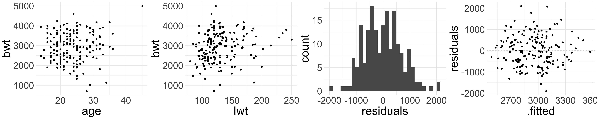

11/18/24
Baystate Medical Center, Springfield, MA during 1986 on the birth weights of 189 babies, along with descriptive information about the mother
Want to understand risk factors for a baby’s birth weight (bwt)
Homework 8 explores the effect of mother’s smoke status on birth weight of baby
Let’s look at a different variable: race of mother
race numerical where 1 = white, 2 = black, 3 = other'data.frame': 189 obs. of 10 variables:
$ low : int 0 0 0 0 0 0 0 0 0 0 ...
$ age : int 19 33 20 21 18 21 22 17 29 26 ...
$ lwt : int 182 155 105 108 107 124 118 103 123 113 ...
$ race : int 2 3 1 1 1 3 1 3 1 1 ...
$ smoke: chr "no" "no" "yes" "yes" ...
$ ptl : int 0 0 0 0 0 0 0 0 0 0 ...
$ ht : int 0 0 0 0 0 0 0 0 0 0 ...
$ ui : int 1 0 0 1 1 0 0 0 0 0 ...
$ ftv : int 0 3 1 2 0 0 1 1 1 0 ...
$ bwt : int 2523 2551 2557 2594 2600 2622 2637 2637 2663 2665 ...We need to convert variable race to categorical! Does not make sense to do “math” on variable:
birthwt2 <- birthwt |>
mutate(race = case_when(race == 1 ~ "white",
race == 2 ~ "black",
race == 3 ~ "other")) |>
mutate(race = factor(race, levels = c("white", "black", "other")))
str(birthwt2)'data.frame': 189 obs. of 10 variables:
$ low : int 0 0 0 0 0 0 0 0 0 0 ...
$ age : int 19 33 20 21 18 21 22 17 29 26 ...
$ lwt : int 182 155 105 108 107 124 118 103 123 113 ...
$ race : Factor w/ 3 levels "white","black",..: 2 3 1 1 1 3 1 3 1 1 ...
$ smoke: chr "no" "no" "yes" "yes" ...
$ ptl : int 0 0 0 0 0 0 0 0 0 0 ...
$ ht : int 0 0 0 0 0 0 0 0 0 0 ...
$ ui : int 1 0 0 1 1 0 0 0 0 0 ...
$ ftv : int 0 3 1 2 0 0 1 1 1 0 ...
$ bwt : int 2523 2551 2557 2594 2600 2622 2637 2637 2663 2665 ...| term | estimate | std.error | statistic | p.value |
|---|---|---|---|---|
| (Intercept) | 3102.7188 | 72.92298 | 42.547890 | 0.0000000 |
| raceblack | -383.0264 | 157.96382 | -2.424773 | 0.0162741 |
| raceother | -297.4352 | 113.74198 | -2.614999 | 0.0096546 |
Fitted model:
\[ \widehat{\text{birth_wt}} = 3102.72 -383.03 \text{raceBlack} -297.44 \text{raceOther} \]
\[\text{raceBlack} = \begin{cases}1 & \text{if race = Black} \\ 0 & \text{otherwise} \end{cases} \qquad \text{raceOther} = \begin{cases}1 & \text{if race = Other} \\ 0 & \text{otherwise} \end{cases}\]
Estimate the birth weight for babies whose mothers are White
\[ \widehat{\text{birth_wt}} = 3102.72 + -383.03 \text{raceBlack} + -297.44 \text{raceOther} \]
\(\widehat{\text{birth_wt}} = 3102.72 -383.03 \times \color{orange}{0} -297.44 \times \color{orange}{0}\)
The estimated birth weight of babies whose mothers are White is 3102.72 grams
More generally: \(b_{0}\) is the estimated value of the response variable for the base level
What is the interpretation of \(b_{1}\) = -383.03? Of \(b_{2}\) = -297.44?
Babies whose mothers are Black have an estimated birth weight about 383.03 grams less than babies whose mothers are White
Babies whose mothers are race “Other” (i.e. not Black or White) have an estimated birth weight about 297.44 grams less than babies whose mothers are White
| term | estimate | std.error | statistic | p.value |
|---|---|---|---|---|
| (Intercept) | 3102.7188 | 72.92298 | 42.547890 | 0.0000000 |
| raceblack | -383.0264 | 157.96382 | -2.424773 | 0.0162741 |
| raceother | -297.4352 | 113.74198 | -2.614999 | 0.0096546 |
When fitting a regression model with a categorical variable with \(k > 2\) levels, the software will always provide a coefficient for \(k-1\) of the levels
The base level does not receive a coefficient
Note: the fitted model has more than one “slope” coefficient, but the race variable is still a single explanatory variable
What happens if we explicitly want to include more than one explanatory variable?
We have seen simple linear regression, where we had one explanatory variable
Extend to include multiple explanatory variables
Multiple linear regression takes the form: \[y = \beta_{0} + \beta_{1} x_{1} + \beta_{2} x_{2} + \ldots + \beta_{p} x_{p} + \epsilon\]
Now there are \(p\) different explanatory variables \(x_{1},\ldots, x_{p}\) per observation
Still one response \(y\) and error \(\epsilon\) per observation
Represents a holistic approach for modeling all of the variables simultaneously
Suppose we would also like to include the mother’s age (age) and weight at last period (lwt) into the model:
\[\text{birth_wt} = \beta_{0} + \beta_{1} \text{raceBlack} + \beta_{2} \text{raceOther} + \beta_{3} \text{age} + \beta_4 \text{lwt} + \epsilon\]
RVery easy to code:
| term | estimate | std.error | statistic | p.value |
|---|---|---|---|---|
| (Intercept) | 2461.147482 | 314.722327 | 7.8200600 | 0.0000000 |
| raceblack | -447.614691 | 161.369310 | -2.7738527 | 0.0061108 |
| raceother | -239.356515 | 115.188920 | -2.0779474 | 0.0391022 |
| age | 1.298831 | 10.107701 | 0.1284991 | 0.8978943 |
| lwt | 4.619545 | 1.787729 | 2.5840294 | 0.0105407 |
\[ \begin{align*} \widehat{\text{birth_wt}} &= 2461.15 -447.61 \text{raceBlack} -239.36 \text{raceOther} + 1.3 \text{age} \\ & \quad + 4.62 \text{lwt} \end{align*} \]
When we have more than one predictor variable, interpretation of the coefficients requires a bit of care
Interpretation of a particular coefficient \(b_{m}\) relies on “holding the other variables fixed/constant” (assuming the model is appropriate)
\[ \begin{align*} \widehat{\text{birth_wt}} &= 2461.15 -447.61 \text{raceBlack} -239.36 \text{raceOther} + \color{orange}{1.3} \text{age} \\ & \quad + 4.62 \text{lwt} \end{align*} \]
For every one year older the mother is, the baby’s birth weight is expected to increase by \(\color{orange}{1.3}\) grams, holding all other variables constant
Interpret the coefficient associated with the mother’s weight (lwt)
\[ \begin{align*} \widehat{\text{birth_wt}} &= 2461.15 -447.61 \text{raceBlack} -239.36 \text{raceOther} + 1.3 \text{age} \\ & \quad + \color{orange}{4.62} \text{lwt} \end{align*} \]
You might be tempted to throw in all available predictors into your model! Don’t fall into temptation!
Quality over quantity
For SLR, we used the coefficient of determination \(R^2\) to assess how good the model was
\(R^2\) is less helpful when there are many variables
Why? The \(R^2\) will never decrease (and will almost always increase) when we include an additional predictor
For multiple linear regression, we use the adjusted \(R^2\) to assess the quality of model fit
“Adjusted” for the presence of additional predictors
Take STAT 211 to learn the formula and intuition behind it!
Adjusted \(R^2\) is always less than \(R^2\)
Call:
lm(formula = bwt ~ race + age + lwt, data = birthwt2)
Residuals:
Min 1Q Median 3Q Max
-2103.50 -429.68 41.74 486.10 1902.20
Coefficients:
Estimate Std. Error t value Pr(>|t|)
(Intercept) 2461.147 314.722 7.820 3.97e-13 ***
raceblack -447.615 161.369 -2.774 0.00611 **
raceother -239.357 115.189 -2.078 0.03910 *
age 1.299 10.108 0.128 0.89789
lwt 4.620 1.788 2.584 0.01054 *
---
Signif. codes: 0 '***' 0.001 '**' 0.01 '*' 0.05 '.' 0.1 ' ' 1
Residual standard error: 704.9 on 184 degrees of freedom
Multiple R-squared: 0.08536, Adjusted R-squared: 0.06548
F-statistic: 4.293 on 4 and 184 DF, p-value: 0.00241We still need LINE to hold
Linearity: harder to assess now that multiple predictors are involved. Good idea to make several scatter plots
Independence: same as before
Nearly normal residuals: same as before
Equal variance: residual plot has fitted values on the x-axis, instead of an explanatory variable

In MLR, we are interested in the effect of a variable \(m\) on the response \(y\).
\(H_{0}: \beta_m = 0\), given other predictors in the model
\(H_{A}: \beta_m \neq 0\), given other predictors in the model (or \(>, <\))
We can write down one null hypothesis for each coefficient in the model
lm()Returning to the larger model:
\[\text{birth_wt} = \beta_{0} + \beta_{1} \text{raceBlack} + \beta_{2} \text{raceOther} + \beta_{3} \text{age} + \beta_4 \text{lwt} + \epsilon\]
We can test the following null hypotheses (no need to write down):
age and lwt are included in the modelage and lwt are included in the modelrace and lwt are included in the modelrace and age are included in the modellm()| term | estimate | std.error | statistic | p.value |
|---|---|---|---|---|
| (Intercept) | 2461.1475 | 314.7223 | 7.8201 | 0.0000 |
| raceblack | -447.6147 | 161.3693 | -2.7739 | 0.0061 |
| raceother | -239.3565 | 115.1889 | -2.0779 | 0.0391 |
| age | 1.2988 | 10.1077 | 0.1285 | 0.8979 |
| lwt | 4.6195 | 1.7877 | 2.5840 | 0.0105 |
Output from lm() provides:
Test statistic, which follows \(t_{n-p}\) where \(p =\) total number of unknown parameters (i.e. \(\beta\) terms)
p-values for testing two-sided \(H_{A}\) provided
Based on the model fit, which variables seem to be important predictors of birth weight of a baby? Why?
lm() (cont.)| term | estimate | std.error | statistic | p.value |
|---|---|---|---|---|
| (Intercept) | 2461.1475 | 314.7223 | 7.8201 | 0.0000 |
| raceblack | -447.6147 | 161.3693 | -2.7739 | 0.0061 |
| raceother | -239.3565 | 115.1889 | -2.0779 | 0.0391 |
| age | 1.2988 | 10.1077 | 0.1285 | 0.8979 |
| lwt | 4.6195 | 1.7877 | 2.5840 | 0.0105 |
lwt does seem to be an important predictor for birth weight, despite inclusion of race and age in the model
lwtand bwt was non-existent (i.e., if \(\beta_{4} = 0\)) and the model also included age and racerace does seem to be an important predictor, despite inclusion of age and lwt
age does not seem to be an important predictor after including race and lwt
Let’s see the model that does not include mother’s age in the model:
| term | estimate | std.error | statistic | p.value |
|---|---|---|---|---|
| (Intercept) | 2486.9039 | 241.9933 | 10.2767 | 0.0000 |
| raceblack | -451.8381 | 157.5662 | -2.8676 | 0.0046 |
| raceother | -241.3008 | 113.8869 | -2.1188 | 0.0354 |
| lwt | 4.6634 | 1.7501 | 2.6646 | 0.0084 |
Write out the fitted model. Interpret the intercept and the coefficient for lwt in context
| term | estimate | std.error | statistic | p.value |
|---|---|---|---|---|
| (Intercept) | 2486.9039 | 241.9933 | 10.2767 | 0.0000 |
| raceblack | -451.8381 | 157.5662 | -2.8676 | 0.0046 |
| raceother | -241.3008 | 113.8869 | -2.1188 | 0.0354 |
| lwt | 4.6634 | 1.7501 | 2.6646 | 0.0084 |
Intercept: the birth weight of babies whose mothers are White and weigh 0 lbs have an estimated birth weight of 2486.9 grams
Coefficient for lwt: for every one pound increase in the mother’s weight at last period, the birth weight of the baby is expected to increase by 4.66 grams, holding all other variables (i.e. race) constant
Let’s compare the model that includes age to the model without age:
| term | estimate | p.value |
|---|---|---|
| (Intercept) | 2461.1475 | 0.0000 |
| raceblack | -447.6147 | 0.0061 |
| raceother | -239.3565 | 0.0391 |
| age | 1.2988 | 0.8979 |
| lwt | 4.6195 | 0.0105 |
| r.squared | adj.r.squared | sigma | statistic | p.value | df | logLik | AIC | BIC | deviance | df.residual | nobs |
|---|---|---|---|---|---|---|---|---|---|---|---|
| 0.0854 | 0.0655 | 704.9368 | 4.293 | 0.0024 | 4 | -1505.128 | 3022.256 | 3041.707 | 91436202 | 184 | 189 |
| term | estimate | p.value |
|---|---|---|
| (Intercept) | 2486.9039 | 0.0000 |
| raceblack | -451.8381 | 0.0046 |
| raceother | -241.3008 | 0.0354 |
| lwt | 4.6634 | 0.0084 |
| r.squared | adj.r.squared | sigma | statistic | p.value | df | logLik | AIC | BIC | deviance | df.residual | nobs |
|---|---|---|---|---|---|---|---|---|---|---|---|
| 0.0853 | 0.0704 | 703.0605 | 5.7491 | 9e-04 | 3 | -1505.137 | 3020.273 | 3036.482 | 91444408 | 185 | 189 |
What do you notice about the estimated coefficients, \(R^2\), and adjusted \(R^2\)?
We have only scratched the surface of MLR
Things to consider:
Multicollinearity (when the predictor variables are correlated with each other)
Model selection
More than one categorical variable
Interaction effects